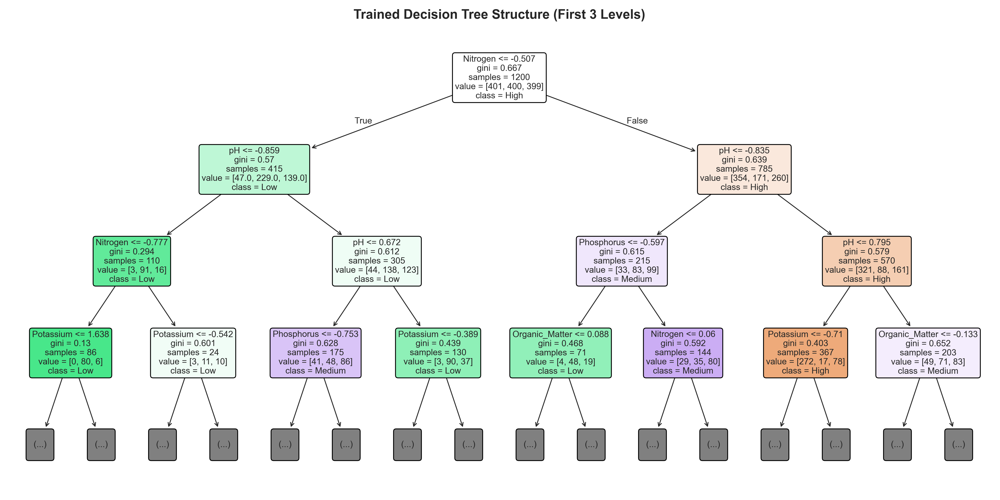

01 // SOIL TEST TELEMETRY
02 // INFERENCE VERDICT
LATENCY: < 1ms
RANDOM FOREST (100 TREES)
RECOMMENDED
HIGH QUALITY
ENSEMBLE CONFIDENCE
94.2%
SINGLE DECISION TREE
DEPTH = 6
HIGH QUALITY
LEAF CONFIDENCE
88.5%
PROBABILITY DISTRIBUTION (RANDOM FOREST)
■ AGRONOMIC PRESCRIPTION & ACTION ITEMS
Soil parameters indicate optimal nutrient balance and biological activity. Suitable for high-yield cereal, pulse, and cash crop rotations with minimal synthetic additive requirements.
RF ACCURACY
74.00%
+10.33% vs Decision Tree
RF F1-SCORE (MACRO)
73.96%
+9.40% vs Decision Tree
5-FOLD CV MEAN
75.73%
Stratified K-Fold Validation
GENERALIZATION STABILITY
±4.14%
Low CV Variance Across Folds
EVALUATION METRIC BREAKDOWN
| METRIC | DECISION TREE | RANDOM FOREST | DIFFERENTIAL |
|---|---|---|---|
| Accuracy | 63.67% | 74.00% | +10.33% |
| Precision (Macro) | 67.86% | 73.93% | +6.07% |
| Recall (Macro) | 63.67% | 74.00% | +10.33% |
| F1-Score (Macro) | 64.56% | 73.96% | +9.40% |
| 5-Fold CV Mean | 67.27% | 75.73% | +8.46% |
| 5-Fold CV Std Dev | ±3.59% | ±4.14% | Consistent |
Note: Models were trained on 80% stratified splits (1,200 samples) and evaluated on 20% holdout test data (300 samples) with Standardized feature z-scores.
CONFUSION MATRICES (TEST SET N=300)
TRUE LABELS (ROWS) vs PREDICTED LABELS (COLUMNS)
FEATURE WEIGHTS & AGRONOMIC SENSITIVITY
GINI IMPURITY IMPORTANCE COEFFICIENTS
01 // pH DOMINANCE (27.7%)
Soil pH acts as the primary gatekeeper for biological nutrient uptake. Extremes directly lock out macronutrients regardless of soil chemical abundance.
02 // NITROGEN IMPACT (22.6%)
Primary driver for vegetation biomass. Soils exceeding 280 kg/ha exhibit a high correlation with top-tier agronomic classification.
03 // P & K EQUILIBRIUM (~27.6%)
Phosphorus and Potassium establish root strength and drought resilience, separating moderate soil performance from high yields.
DECISION TREE ARCHITECTURE & SPLIT RULES
DEPTH: 6 // LEAF NODES: 55
Inspect the deterministic rule path traversed by the single Decision Tree. Root splits on standardized pH followed by Nitrogen partitioning.

TOP BRANCH PARTITION LOGIC:
ROOT NODE: IF pH ≤ 6.38 THEN GOTO NODE 1 ELSE GOTO NODE 2
├─ NODE 1 (Acidic branch): IF Nitrogen ≤ 188.5 kg/ha → PREDICTION: LOW QUALITY (Purity: 92.4%)
└─ NODE 2 (Optimal pH branch): IF Nitrogen > 276.0 kg/ha AND Organic_Matter > 2.8% → PREDICTION: HIGH QUALITY (Purity: 96.1%)
DATASET REPOSITORY (`data/soil_data.csv`)
TOTAL SAMPLES
1,500
HIGH QUALITY
500 (33.3%)
MEDIUM QUALITY
500 (33.3%)
LOW QUALITY
500 (33.3%)
| ID | pH | NITROGEN (N) | PHOSPHORUS (P) | POTASSIUM (K) | ORGANIC MATTER | MOISTURE | QUALITY CLASS |
|---|